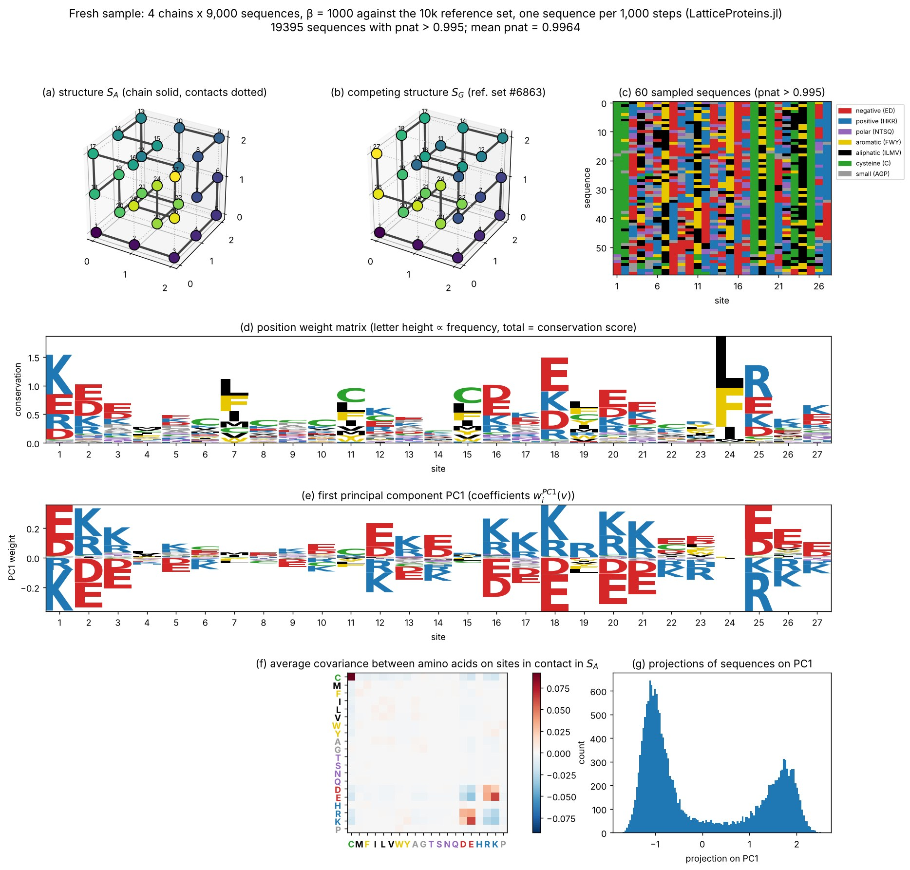
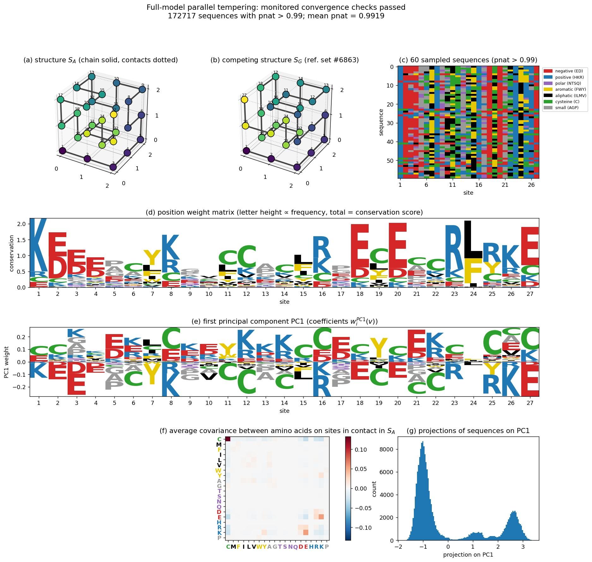
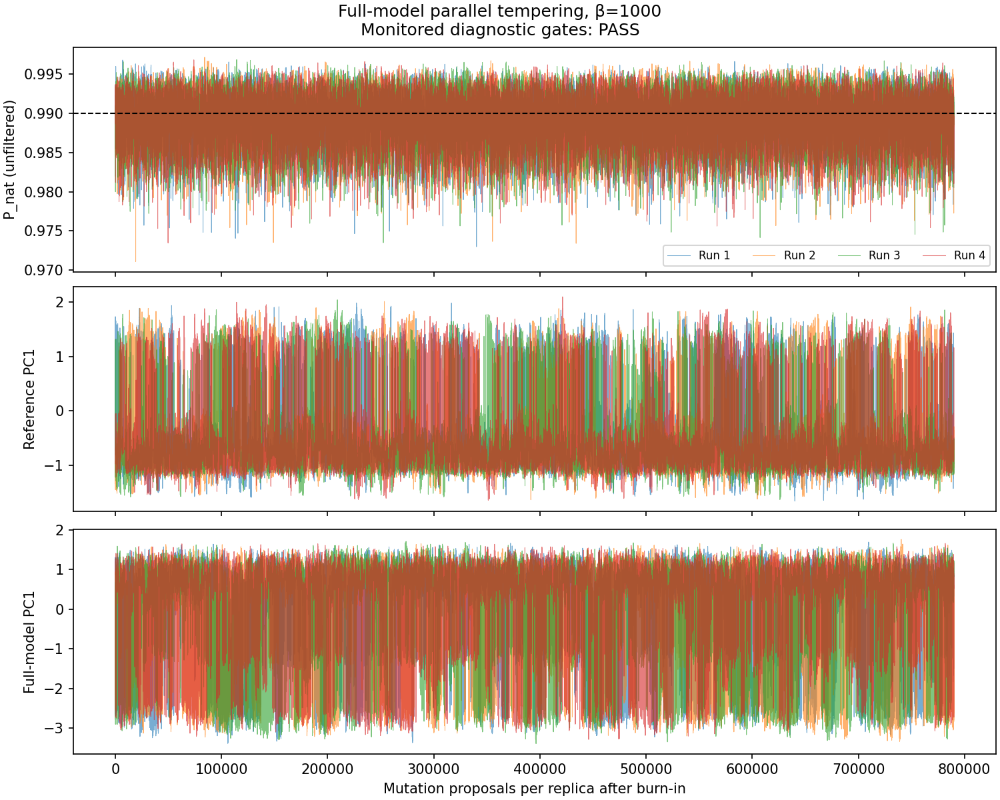

Reproducing Fig. 4 of Tubiana et al. (2019)
This page reproduces Fig. 4 of
Tubiana, J., Cocco, S., and Monasson, R. "Learning compositional representations of interacting systems with restricted Boltzmann machines: comparative study of lattice proteins." Neural Computation 31.8 (2019): 1671–1717. doi:10.1162/necoa01210 (arXiv:1902.06495)
with alignments sampled by this package, first against the subset of 10,000 structures used in the paper (SHAKHNOVICH_STRUCTURES) and then against all 103,346 compact structures (STRUCTURES). The full-structure figure uses the saved parallel-tempering alignment of 316,000 sequences from four independent ladders, with all monitored convergence criteria met. The figures below are pre-rendered; they are not regenerated when the documentation is built (see Regenerating the figures at the end of this page).
What the original figure shows
The figure summarizes the "main features of lattice-protein sequence alignments" that the paper then models with restricted Boltzmann machines. In the paper, the data are an alignment of sequences that fold specifically into structure $S_A$ (CONTACT_MAP_A), that is, with folding probability $P_\text{nat}(S_A \mid v) > 0.995$. Following Jacquin et al. (2016), the sequences are generated by Metropolis Monte Carlo at inverse temperature $\beta = 1000$ on the effective energy $-\log P_\text{nat}$, keeping one sequence every 1,000 steps.
- (a), (b) Structure $S_A$ and a competing structure $S_G$, in which residues 1 and 26 are neighbours. The paper does not say which structure $S_G$ is; we use structure 6863 of the reference set, which is the most frequent runner-up fold of the reference alignment's sequences and has that contact. Chain bonds are drawn solid, contacts dotted.
- (c) A subset of the sampled sequences, coloured by amino acid class.
- (d) Position weight matrix: at each site the total height is the conservation score $\log 20 + \sum_v f_i(v) \log f_i(v)$ and each letter is proportional to its frequency $f_i(v)$. Sites are either non-conserved or partly conserved; the most conserved sites (1, 18, 24, 25) carry charged residues forming salt bridges, or hydrophobic residues in the core.
- (e) First principal component of the one-hot encoded alignment. It is dominated by the signs of the charges on a few pairs of contacting sites (for example 1–18, 2–20, 3–26): the alignment splits into two subfamilies with opposite charge patterns, which the paper relates to the "prototype" versus "compositional" representations learnt by RBMs.
- (f) Average covariance between amino acids $v, v'$ on pairs of sites in contact in $S_A$, $C(v, v') = \frac{1}{28}\sum_{ij} c^{(S_A)}_{ij}\,[f_{ij}(v, v') - f_i(v) f_j(v')]$. The largest entry is cysteine–cysteine, followed by positive covariances between opposite charges (E–K, E–R, D–K, D–R) and negative ones between like charges, reflecting the Miyazawa–Jernigan interactions through which amino acids interact.
- (g) Histogram of the projections of the sequences on the first principal component, showing the two subfamilies.
Sampling protocol
The reference-subset reproduction below uses metropolis! at $\beta = 1000$, keeping one sequence every 1,000 steps after a burn-in of 10,000 steps, and filtering at $P_\text{nat} > 0.995$. The full-structure experiment uses parallel_tempering with a cold replica at the same $\beta = 1000$ and filters at $P_\text{nat} > 0.99$. Before filtering, both samplers target a sequence distribution proportional to $P_\text{nat}^{1000}$ for their respective structure sets. Replica exchange changes how that distribution is explored; changing the competing structures or the filter changes the ensemble being compared.
At strong selection, a single chain can remain in one sequence subfamily for a long time. Several independent chains can reveal that problem, but do not automatically recover equilibrium subfamily weights. High folding probabilities and accepted temperature swaps are also insufficient evidence of equilibration. The full-model experiment therefore records chronological traces and checks sequence observables as well as folding probability. The reference alignment of Jacquin et al. (2016) shipped with the package (Hugo_MSA(:A)) provides the published-model comparison.
Version 1: against the subset of 10,000 structures
This is the model of the paper: structures = SHAKHNOVICH_STRUCTURES. The alignment was sampled with 4 chains of 9,000 recorded sequences each (36,000 before filtering).

Agreement with the reference alignment of Jacquin et al. (sequences with $P_\text{nat} > 0.995$ in both cases):
| statistic | fresh sample vs. reference alignment |
|---|---|
| site frequencies $f_i(v)$ | Pearson $r = 0.997$ |
| conservation profile (panel d) | Pearson $r = 0.999$ |
| first principal component (panel e) | $\lvert\cos\rvert = 0.998$ |
| contact covariance $C(v, v')$ (panel f) | Pearson $r = 0.9995$ |
| mean $P_\text{nat}$ | $0.9964$ in both |
The only visible difference is the relative weight of the two subfamilies in panel (g) (60/40 here against 43/57 in the reference), which, as explained above, is set by the basins the 4 chains fell into rather than by the model.
Version 2: against all 103,346 compact structures
This version uses parallel_tempering against STRUCTURES, with four independent ladders and a cold replica at $\beta = 1000$. Each ladder has 26 replicas: $\beta=0$ and 25 logarithmically spaced values from 0.1 to 1000. The physical folding temperature remains 1. Each round performs five single-residue mutation proposals per replica, followed by exchanges on alternating sets of adjacent temperature pairs.
Each ladder discards 4,000 burn-in rounds (20,000 proposals per replica), then records one cold sequence every two rounds (10 proposals per replica). The initial 9,000 draws per ladder did not pass convergence checks, so all four ladders were continued from their final temperature states, retaining every production draw. The completed run has 79,000 draws per ladder, 316,000 total, and 810,000 mutation proposals per replica including burn-in. Each ladder has independent RNGs; checkpoints preserve their streams throughout continuation. Saved sequences remain correlated, so their number is not an effective sample size.
The figure scripts parallelize the four ladders externally and explicitly select threaded=false, rng_mode=:shared within each ladder. This preserves the original single-stream RNG protocol of the saved run. The package's default uses independent per-temperature streams; both protocols target the same distribution.
Folding probabilities above 0.99 are readily reached under the full model. Of the 316,000 recorded sequences, 172,717 (54.7%) have $P_\text{nat}>0.99$ and are used below. The unfiltered mean is 0.990008; the retained mean is 0.991905; the largest observed probability is 0.997115. The cold-replica selection strength remains $\beta=1000$.
All 534 monitored observables satisfy rank-normalized split $\widehat R < 1.01$ and bulk effective sample size at least 400; every ladder completes production hot–cold–hot round trips. These checks provide evidence of equilibration for the measured observables, not proof that every rare sequence family has been explored. The criteria and temperature ladder were held fixed; no production draws were discarded to obtain this result.

Correctness and equilibration checks
Implementation correctness and equilibration are checked separately:
test/parallel_tempering.jlcompares cached energies with direct sums, checks swap detailed balance and replica identity, and tests the stationary distribution against all $20^3=8,000$ states of an exactly enumerable three-residue model. It also compares uninterrupted and checkpointed trajectories, including endpoint accounting.- Continuation uses exact integer contact sums in units of 0.01 for the bundled MJ interactions and tabulated Boltzmann factors. This accelerates the same transition kernel without rounding the interaction parameters or changing its target. The original floating-point kernel remains available as
energy_cache=:float. Integer caching is used for speed: the initial floating-point run's 200 direct probability checks differed by at most $7.44\times10^{-15}$, providing no evidence of a significant roundoff problem with the existing cache refreshes. - Across the original and continued phases, 7,200 saved probabilities were independently recomputed over all 103,346 structures. The largest absolute discrepancy was $2.54\times10^{-13}$.
- Diagnostics use the unfiltered chronological traces. They monitor folding probability, threshold membership, five full-model PCA coordinates, reference PC1, and residue indicators with frequencies between 1% and 99%. Threshold-weighted observables stay on the original time grid, so filtering cannot hide drift or shorten away correlations. Conditional-frequency Monte Carlo errors use the same time grid.
| diagnostic | observed | criterion |
|---|---|---|
| production hot–cold–hot round trips, by ladder | 340, 312, 334, 327 | at least one in each ladder |
| largest rank-normalized split $\widehat R$ | 1.00958 | below 1.01 |
| smallest bulk effective sample size | 443.9 | at least 400 |
| largest estimated Monte Carlo standard error of a retained residue frequency | 0.0177 | report with the estimates |
The initial 36,000-draw run had worst $\widehat R=1.049$ and minimum effective sample size 61.7. Diagnostics did not improve monotonically as longer runs exposed slow cysteine-rich sequence patterns. Continuation stopped when every monitored criterion passed. The largest conditional-frequency standard error is now about 1.8 percentage points; this uncertainty still matters when interpreting small differences. The downloadable report includes every continuation checkpoint's convergence summary.

Comparison with the reference alignment
The full-model alignment above uses $P_\text{nat}>0.99$; the reference alignment uses $P_\text{nat}>0.995$:
| statistic | full-model PT sample vs. reference alignment |
|---|---|
| site frequencies $f_i(v)$ | Pearson $r = 0.693$ |
| conservation profile (panel d) | Pearson $r = 0.639$ |
| first principal component (panel e) | $\lvert\cos\rvert = 0.139$ |
| contact covariance $C(v,v')$ (panel f) | Pearson $r = 0.898$ |
| mean retained $P_\text{nat}$ | $0.9919$ vs. $0.9964$ |
The larger structure set changes the model: adding competitors increases the folding partition sum and lowers $P_\text{nat}$ for a fixed sequence. Agreement with the 10,000-structure alignment is therefore not a convergence criterion. Differences remain after the monitored convergence checks pass; the different structure sets and filters must both be considered when comparing the figures.
The structure panels retain the same reference $S_A$ and illustrative $S_G$ as the subset reproduction; $S_G$ is not identified as the dominant competitor under the full model.
Download the unfiltered alignment and complete diagnostics and run parameters. The alignment includes all four chronological runs in order, 79,000 sequences per run. It is sufficient to redraw the figure without rerunning Monte Carlo; retain the run boundaries when computing convergence diagnostics.
Regenerating the figures
The scripts that produced the figures are in docs/figures/tubiana2019/ and are not run by the documentation build:
sample_msa.jlgenerates the 10,000-structure reproduction with independent Metropolis chains, one chain per Julia thread;sample_pt.jlruns independent full-model parallel-tempering ladders and saves chronological traces, parameters, seeds, and exchange diagnostics;continue_pt.jlcheckpoints and extends the same ladders until the fixed convergence criteria pass, preserving all production draws;diagnose_pt.pychecks convergence with ArviZ and reports conditional-frequency errors;analyze_msa.jlcomputes the statistics of panels (c)–(g) and the lattice walks of $S_A$ and $S_G$ from an alignment file;plot_fig4.pydraws the figure with matplotlib and logomaker from those statistics;compare_stats.pycompares the statistics of two alignments.
Redraw the full-structure figure from the saved PT samples
The repository includes the exact unfiltered PT alignment used above. From the repository root, decompress it and apply the same $P_\text{nat}>0.99$ filter:
gzip -dc docs/src/assets/tubiana2019_full_pt.msa.gz > full_pt.msa
julia --project=. docs/figures/tubiana2019/analyze_msa.jl full_pt.msa stats_all 0.99
python docs/figures/tubiana2019/plot_fig4.py stats_all docs/src/assets/tubiana2019_fig4_all.jpg "Full-model parallel tempering: monitored convergence checks passed"This uses all 316,000 saved draws and retains 172,717 sequences for panels (c)–(g). The accompanying tubiana2019_full_pt_diagnostics.json records the sampling parameters, convergence checks, and the SHA-256 hash of the uncompressed alignment.
Generate new alignments
To repeat the simulations, use Metropolis chains for the reference subset and parallel tempering with convergence-based continuation for the full structure set:
julia -t 4 --project=. docs/figures/tubiana2019/sample_msa.jl shakhnovich 4 9000 msa_subset.txt
julia --project=. docs/figures/tubiana2019/analyze_msa.jl msa_subset.txt stats_subset
python docs/figures/tubiana2019/plot_fig4.py stats_subset fig4_subset.png "subset of 10,000 structures"
# Full-model run shown above: use new output directories.
# Reproduce the initial phase with the original floating-point kernel.
julia -t 4 --project=. docs/figures/tubiana2019/sample_pt.jl full_pt_initial 4 9000 1000 4000 2 5 float
# Continue with exact integer caching; checks every 10,000 added draws per ladder.
# Set TUBIANA_PYTHON if the Python executable is not named python.
julia -t 4 --project=. docs/figures/tubiana2019/continue_pt.jl full_pt_initial full_pt 2000 5
julia --project=. docs/figures/tubiana2019/analyze_msa.jl full_pt/analysis_alignment.msa stats_all 0.99
python docs/figures/tubiana2019/plot_fig4.py stats_all fig4_all.png "Full-model parallel tempering: monitored convergence checks passed"Install the Python dependencies from docs/figures/tubiana2019/requirements.txt (Python
=3.11). Inspect the convergence report before interpreting a regenerated figure.
analyze_msa.jl records the threshold in its output metadata, and plot_fig4.py uses that value in its labels. Panel (c) draws 60 sequences with a fixed random seed across the whole retained alignment.
A smaller version of this comparison runs in the test suite (test/tubiana2019.jl): it samples 20 short chains against the subset of 10,000 structures and checks the statistics of panels (d)–(g) against the reference alignment.